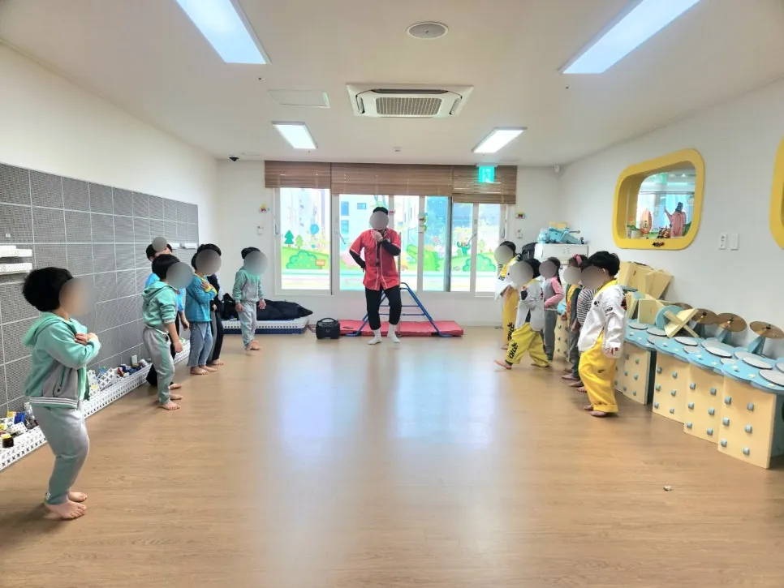

경기 남부 행사 준비 · 2026년 11월 8일
어린이집 유아체육 수업 — 스카프 · 철봉 · 준비운동 진행
어린이집 유아체육 수업은 교구가 무엇이냐보다 준비운동과 단계 나누기를 어떻게 하느냐가 수업 분위기를 좌우합니다. 아이들은 같은 동작도 해 보기 전에 몸이 풀려 있어야 즐겁게 따라 하고, 어려운 동작은 작은 단계로 나눠 줘야 용기를 냅니다. F&J 이벤트(펀앤조이 체육교실)는 경기 남부 어린이집 · 유치원에서 유아체육 수업을 합니다. 이 글은 스카프 수업과 철봉 수업을 예로 들어 진행 순서와 준비할 것을 정리했습니다.

- 수업은 준비운동, 교구 익히기, 동작 단계 나누기, 마무리 순서로 짭니다.
- 스카프 수업은 만져 보고 흔들고 던지고 잡는 식으로 교구와 친해지는 것부터 시작합니다.
- 철봉 수업은 많은 부위의 근육을 쓰므로 머리부터 발끝까지 천천히 준비운동을 합니다.
- 어려워하는 아이는 선생님이 곁에서 도와 용기를 낼 수 있게 합니다.
- 교구 대여도 가능하니 수업 계획에 맞춰 상담하면 됩니다.
1. 어린이집 유아체육 수업은 이런 순서로 짭니다
아이들 수업은 어른 수업처럼 설명이 길면 집중이 끊깁니다. 그래서 준비운동 → 교구 익히기 → 동작 단계 나누기 → 마무리 네 단계로 짧게 끊어 짜면 아이들이 지루해하지 않습니다. 어떤 교구든 이 틀을 따르면 수업을 설계하기 쉽습니다.
| 단계 | 하는 일 | 선생님이 볼 것 |
|---|---|---|
| 준비운동 | 몸 풀기, 근육 늘이기 | 아이들이 다치지 않게 천천히 |
| 교구 익히기 | 교구를 만져 보고 흔들어 보기 | 낯선 교구를 무서워하는지 |
| 동작 단계 나누기 | 쉬운 동작에서 어려운 동작으로 | 어려워하는 아이를 곁에서 돕기 |
| 마무리 | 정리 · 이야기 나누기 | 다음 수업과 이어지는 칭찬 한마디 |
2. 스카프 체육수업은 만져 보는 것부터
스카프는 어디서나 쉽게 볼 수 있는 익숙한 물건이라 아이들이 낯설어하지 않습니다. 날씨가 오락가락해서 감기에 걸리기 쉬운 때에도 실내에서 몸을 움직이기 좋은 교구입니다. 수업은 다음 순서로 진행했습니다.
- 만져 보기 — 부들부들한 촉감을 느끼고 비비고 흔들어 봅니다.
- 펼쳐 보기 — 작게 접었다가 크게 펼치며 크기를 느낍니다.
- 변신 놀이 — 머리 위에 올려 유령으로 변신하고, 어깨에 걸쳐 망토나 이불처럼 덮어 봅니다.
- 던지고 잡기 — 스카프를 위로 던지고 떨어지기 전에 잡아 봅니다.
처음에는 색깔을 가려 고르던 아이도 시간이 지나면 어떤 색이든 신나게 흔드는 모습으로 바뀝니다. 친구와 함께 장난치며 웃는 것도 수업의 중요한 부분입니다.

3. 철봉 수업은 준비운동이 절반입니다
철봉은 아이들에게 아직 낯선 교구일 수 있습니다. 대근육과 소근육을 함께 쓰는 교구이기 때문에 몸을 다치지 않게 근육을 잘 풀어 주는 것이 중요합니다. 철봉 수업은 생각보다 많은 부위의 근육을 쓰기 때문에 머리부터 발끝까지 천천히, 집중해서 준비운동을 했습니다.
그다음에는 아이들이 좋아하는 앞구르기 같은 쉬운 동작으로 몸을 달굽니다. 앞구르기를 벌써 완벽하게 하는 아이도 있고 아직 어려워하는 아이도 있습니다. 어려워서 속상해하거나 의기소침해지는 아이에게는 체육 선생님이 곁에서 다치지 않게 도우며 용기를 갖게 합니다. 그 뒤에 철봉 동작으로 넘어갑니다.

4. 유아체육 수업 준비 체크리스트
수업 전에 아래 항목을 점검해 보세요. 원 사정에 맞게 더하면 됩니다.
| 항목 | 확인할 것 |
|---|---|
| 공간 | 바닥 상태, 아이들이 움직일 만한 넓이 |
| 교구 | 스카프 · 철봉 같은 교구의 상태와 개수 |
| 아이들 | 나이, 한 번에 수업하는 인원 |
| 선생님 | 곁에서 도울 어른의 수 |
| 복장 | 움직이기 편한 옷, 양말 · 신발 규칙 |
교구가 필요하면 빌릴 수도 있습니다. 놀이와 수업에 쓰는 교구를 빌려 드립니다.
5. 유아체육 수업 상담은 이렇게
어린이집 · 유치원 이름과 아이들 나이, 한 번에 수업할 인원을 알려 주세요. 수업 구성과 필요한 교구를 정리합니다. 수업과 체험 프로그램은 유아체육 · 체험 에서 볼 수 있고, 상담은 견적 문의 로 받습니다.
역할극 중심의 프로그램은 화성 유치원 체험놀이 — 교통안전 · 꼬마농부 글에서 볼 수 있습니다.
자주 묻는 질문
수업은 몇 명 단위로 하나요?
반 인원과 공간 크기에 따라 정합니다. 아이들 나이와 인원을 알려 주시면 구성을 안내합니다.
교구만 빌릴 수 있나요?
네. 놀이와 수업에 쓰는 교구를 빌려 드립니다. 필요한 교구를 알려 주세요.
영아도 수업할 수 있나요?
영아, 유아, 유치 연령에 맞춘 체육수업을 합니다. 나이를 알려 주시면 맞춰서 짭니다.